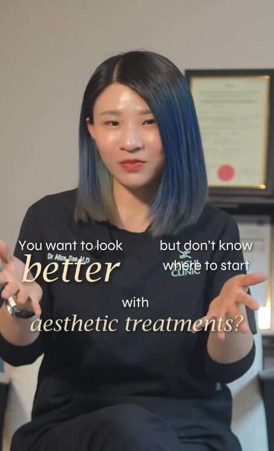
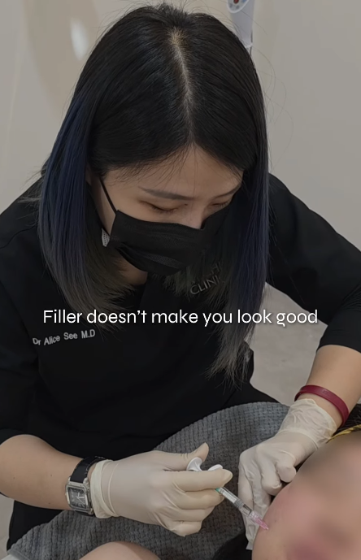
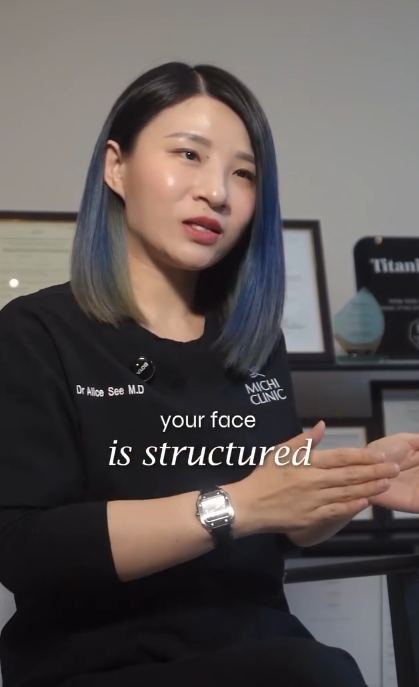

→ 她来找 Dr Alice 时，也最担心这个。
「我想下巴好看一点，
但不要一看就知道我打了。」
Dr Alice 没有刻意把她的下巴做得又尖又长。
而是根据她原本的脸型和比例，
设计适合她的长度和形状。
让脸型更顺、侧脸更精致，
但看起来还是她自己。


→ 她来找 Dr Alice 时，也最担心这个。
Dr Alice 没有刻意把她的下巴做得又尖又长。
而是根据她原本的脸型和比例，
设计适合她的长度和形状。
让脸型更顺、侧脸更精致，
但看起来还是她自己。
随着刚注射后的轻微肿胀慢慢消退，
下巴和原本的脸型融合得更自然。
好的 Chin Filler，不是让人注意到你的下巴。
而是让人觉得，你的脸怎么变好看了。




10年 Facial Design 经验
1000+ 客户案例
多年 Filler 注射经验
马来西亚医美医生培训导师
OUR LOCATION
想调整下巴，但不想让人看出你做了？
预约 Dr Alice 下巴设计咨询